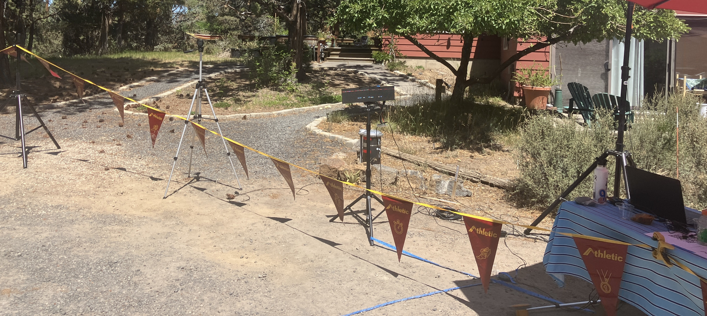

Contact us at PhotoFinishProTiming@gmail.com for event booking. Let us know date, location, and which package you would like. Looking for a different scenario? Reach out with your idea to the same email, we would be happy to figure your meet out with you!
Jump to TF Pricing| XC Timing Packages | |||
|---|---|---|---|
| Name: | Price: | Features: | Sample: |
| Lite | $200 | One Linescan and One Front Facing Camera Official Results Published After Meet |
No Sample Meet Available Yet |
| Standard | $400 | One Primary and One Backup System, each with 2 cameras Official Results Published After Each Event |
No Sample Meet Available Yet |
| Professional | TBD, $180 per Split Location | One Primary and One Backup System, each with 2 cameras Official Results Published After Each Event Add-Ons Included: Live Results, Finish Line Image Export, Split Locations, Digital Scoreboard, Race Videos. |
No Sample Meet Available Yet |
| Add-Ons | |||
| Live Results | $85 | Live Results through AthleticLIVE. | No Sample Meet Available Yet |
| Finish Line Image Export | $30, $10 with Live Results | Finish Line Images exported to results. | No Sample Event Available Yet |
| Split Locations (Requires Live Results) | $200 per location | Timed splits during races. | No Sample Meet Available Yet |
| Digital Scoreboard | $150 | Full-size scoreboard at finish line, showing event results | No Sample Image Available Yet |
| Race Videos | FREE with Volunteer | Race Videos to go on AthleticLIVE and AthleticNET after the meet concludes. | No Sample Event Available Yet |
| TF Timing Packages | |||
|---|---|---|---|
Field Events: Requires event volunteers to score field events. Please contact us if this will be an issue. |
|||
| Name: | Price: | Features: | Sample: |
| Lite | $175 | One Linescan and One Front Facing Camera Official Results Published After Meet Paper Field Event Scoring |
No Sample Meet Available Yet |
| Standard | $350 | One Primary and One Backup System, each with 2 cameras Official Results Published After Each Event Paper Field Event Scoring, unless Live Field Results |
No Sample Meet Available Yet |
| Professional | TBD, $180 per Enroute Location | One Primary and One Backup System, each with 2 cameras Official Results Published After Each Event Add-Ons: Live Track Results, Live Field Results, Enroute Timing, Race Videos, Field Event Videos, Lap Counter, Digital Scoreboard. |
No Sample Meet Available Yet |
| Add-Ons | |||
| Live Track Results | $80 | Live Track Results through AthleticLIVE with splits timed for distance races and relays. Finish Line Images exported for all races. | Timer Training 1 |
| Live Field Results | $30 | Live Attempt-By-Attempt Field Results through AthleticLIVE. Requires Live Track Results add-on. Uses AthleticFIELD app. |
No Sample Event Available Yet |
| Enroute Timing | $200 per Enroute Location | Enroute timed results for events. | No Sample Event Available Yet |
| Digital Scoreboard | $150 | Full-size scoreboard at finish line, showing event results | No Sample Image Available Yet |
| Lap Counter | $140 | Digital Sign to show laps left to competitors. | No Sample Image Available Yet |
| Race Videos | FREE with Volunteer | Race Videos to go on AthleticLIVE and AthleticNET after the meet concludes. | Timer Training 2 |
| Field Event Videos | FREE with Volunteer | Attempt-by-Attempt videos for field events, posted to AthleticLIVE and AthleticNET. Requires a package with AthleticFIELD app. | No Sample Event Available Yet |